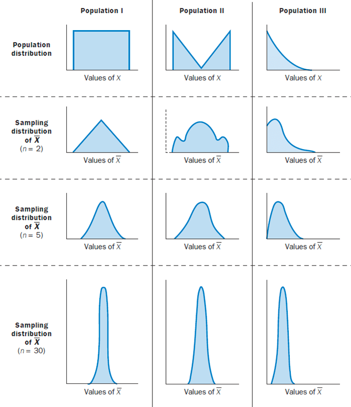

基本概念及定义
对于大学期间有系统学习过概率论与数理统计这么课程的同学，即使长时间不用，对其中细节早已遗忘，但是多少肯定还是有建立起基本的知识体系和认知。至少知道什么是概率，什么是正态分布。以下内容是对概率论与数理统计部分主要内容的快速review，相信这些内容足够唤起记忆。
概率论基本概念
随机事件：随机实验中可能发生也可能不发生的事情，简称事件
必然事件：随机实验中必然发生写事件，用符号 Ω 表示
不可能事件：随机试验中必然不发生的事件，用符号 ∅ 表示
随机实验 E 中必然发生一个且仅发生一个的最简单事件为实验 E 的基本事件，由若干基本事件组合而成的事件成为复合事件。一个事件是否为基本事件是相对于实验目的而言的。
我们用集合表示事件，对于随机实验 E 的每一个基本事件，用一个只包含一个元素 ω 的单元素 {ω} 表示；复合事件，则用对应的若干个元素所组成的集合表示； 由全体基本事件所对应的全部元素所组成的集合，称为随机实验 E 的样本空间，样本空间仍然用 Ω 表示，和必然事件一样。样本空间的每一个元素 ω 为样本点。
随机变量：设 Ω 是随机试验 E 的样本空间，若对于每一个样本点 ω∈Ω ，都有唯一的实数 X(ω) 与之对应，且对于任意实数 x ，都有确定的概率 P{X(ω)≤x} 与之对应，则称 X(ω) 为随机变量，简记为 X 。随机变量是一个函数。
概率分布函数：设 Ω 是随机试验 E 的样本空间，x 是任意实数，称函数
F(x)=P{X≤x}=P{ω:X(ω)≤x}
为随机变量 X 的分布函数 ，F(x) 也可以记作 FX(x) 。
离散型随机变量：如果随机变量 X 只取有限个或可列无穷多个数值：x1,x2,⋯,xn,⋯ ，若 P{X=xi}=pi ，且它满足：
(1)pi≥0;(2) i=1∑∞pi=1,
则称 X 为离散型随机变量，并称：
P{X=xi}=pi,i=1,2,⋯
为 X 的分布律。
伯努利（Bernoulli）实验：若一个实验的样本空间只有两个样本点，即只有两个可能的对立结果（例如：抛硬币）：A 和 Aˉ ，则称之为伯努利实验。在伯努利实验中， A 为伯努利实验的基本事件，若 P(A)=p,0<p<1 ，令
X={1,0,A occursAˉ occurs
则 X 的分布律为：
P{X=x}=px(1−p)1−x,x=0,1
也称 X 服从(0-1)分布。
n 次重复独立的伯努利实验称为 n 重伯努利实验。在 n 重伯努利实验中，事件 A 恰好发生 k 次的概率为：
Pn(k)=Cnkpk(1−p)n−k,k=0,1,2,⋯,n
若随机变量 X 的分布律为：
P{X=k}=Pn(k)=Cnkpk(1−p)n−k,k=0,1,2,⋯,n
则称 X 服从二项分布，记为 X∼B(n,p) 。可以用”一次实验同时抛 n 枚硬币出现 k 次正面的概率“来理解二项分布。（0-1）分布是二项的特殊情况，即 X∼B(1,p) 。
概率密度：设 F(x) 是随机变量 X 的分布函数，若存在非负函数 f(x) ，对任意实数 x ，有
F(x)=∫−∞xf(u)du
则称 X 是连续型随机变量，称 f(x) 为 X 的概率密度。
随机变量的数字特征
数学期望
随机变量服从二项分布的数学期望：设随机变量 X∼B(n,p) ，由二项分布的可加性可知，X 可以表示为 n 个相互独立(0-1)分布随机变量之和 X=X1+X2+⋯+Xn，且
E(Xi)=0×(1−p)+1×p=p(i=1,2,⋯,n)
从而
E(X)=i=1∑nE(Xi)=np
方差
随机变量服从(0-1)分布的方差：
D(X)=E[X−E(X)]2=E(X2)−[E(X)]2=(02×(1−p)+12×p)−p2=p−p2=p(1−p)
随机变量服从二项分布的方差：
由二项分布的可加性可知，X 可以表示为 n 个相互独立(0-1)分布随机变量之和 X=X1+X2+⋯+Xn ，从而有：
D(X)=i=1∑nD(Xi)=np(1−p)
协方差与相关系数
大数定律与中心极限定理
大数定律
大数定律常见的有5种表述形式，我们选取其中2个进行表述。
辛坎大数定律：设 X1,X2,⋯,Xn,⋯ 是相互独立且服从同一分布的随机变量序列，随机变量 Xi 具有数学期望：
E(Xi)=μ(i=1,2,⋯)
则 X1,X2,⋯,Xn,⋯ 服从大数定律，即对任意实数 ε>0 有：
n→∞limP{∣∣n1i=1∑nXi−μ∣∣<ε}=1
伯努利大数定律：设 m 是 n 重伯努利实验中事件 A 出现的次数，p 是 A 在每次实验中发生的概率，则对于任意给定的实数 ε>0 有：
n→∞limP{∣∣nm−p∣∣<ε}=1
通俗解释，对于相当多次数重复实验，根据大数定律知道，样本数量越多，则其算术平均值就有越高的概率接近期望值。以抛硬币为例，重复足够多次后正面出现的概率趋近于0.5。
中心极限定理
独立同分布中心极限定理：设 X1,X2,⋯,Xn,⋯ 是独立同分布的随机变量序列，随机变量 Xi 具有数学期望和方差：
E(Xi)=μ,D(Xi)=σ2>0(i=1,2,⋯)
则 X1,X2,⋯,Xn,⋯ 服从中心极限定理，即：
n→∞limP{nσ∑i=1nXi−nμ≤x}=Φ(x)
其中 Φ(x) 为标准正态分布。
此定理的结果说明序列 Zn=nσ∑i=1nXi−nμ 的极限分布时标准正态分布。因此，当 n 很大时，可以认为 Zn 近似服从 N(0,1) 分布，从而：
i=1∑nXi=nσZn+nμ
近似服从 N(nμ,nσ2) 分布。而 X1,X2,⋯,Xn,⋯ 的前 n 项的算数平均 Xˉn=n1∑i=1nXi 近似服从 N(μ,nσ2) 分布。 当 n 充分大时，由中心极限定理可得概率近似计算公式：
P{x1<i=1∑nXi≤x2}=P{nσx1−nμ<Zn≤nσx2−nμ}≈Φ(nσx2−nμ)−Φ(nσx1−nμ)
棣莫弗-拉普拉斯中心极限定理：设随机变量 Yn∼B(n,p)(n=1,2,⋯) ，则对任意实数 x 有
n→∞limP{np(1−p)Yn−np≤x}=Φ(x)
若随机变量 Yn∼B(n,p) ，当 n 足够大时，由中心极限定理可得到概率近似计算公式：
P{m1<Yn≤m2}=P{np(1−p)m1−np<np(1−p)Yn−np≤np(1−p)m2−np}≈Φ(np(1−p)m2−np)−Φ(np(1−p)m1−np)
中心极限定理通俗的解释就是随着样本量的增加，样本均值的分布会逐渐趋近于正态分布：

数理统计基本概念
总体：研究对象的全体
个体：组成总体的每个基本元素
赋有一定概率分布的总体称为统计总体，其概率分布称为总体分布。当总体分布为正态分布时，称为正态分布总体或简称正态总体。
总体的概率分布是总体的核心。因此，进一步将总体看成具有相应的概率分布的随机变量，比如 X ，称作总体 X，则随机变量 X 的概率分布就是总体分布。
样本是按一定的规定从总体中抽出的一部分个体。这里的”按一定的规定“，是指为保证总体中的每一个个体有同等的被抽出的机会而采取的一些措施。取得样本的过程，称为抽样。
样本是一组随机变量，记为 X1,X2,⋯,Xn ，其中 n 称为样本容量或样本大小或样本量。实施抽样后得到的具体数据 x1,x2,⋯,xn 称为样本观测值。
简单随机样本：样本 X1,X2,⋯,Xn 满足以下要求的称之为简单随机样本，如果没有特别说明，通常都是简单随机样本：
- 代表性。每个 Xi 应该与总体 X 有相同的分布；
- 独立性。 X1,X2,⋯,Xn 应该是相互独立的随机变量。
统计量：设 X1,X2,⋯,Xn 为来自总体 X 的一个样本，若样本函数 g(X1,X2,⋯,Xn) 中不含任何未知参数，则称 g(X1,X2,⋯,Xn) 为一个统计量。常用的统计量有：
- Xˉ=n1∑i=1nXi 称为样本均值。注意：总体均值又称数学期望。
- S2=n−11∑i=1n(Xi−Xˉ)2 称为样本方差。S 称为样本标准差。注意和总体方差的区别，总体方差是除以 n 而不是 n−1 。
- Ak=n1∑i=1nXik （ k 为任意正整数），称为样本 k 阶原点矩。
- Mk=n1∑i=1n(Xi−Xˉ)k （ k 为任意正整数），称为样本 k 阶中心矩。样本原点矩和样本中心距统称样本矩。
注意：样本1阶原点矩就是样本均值 A1=Xˉ ；而样本2阶中心矩并不等于样本方差，而是 M2=nn−1S2 。
将样本观测值 x1,x2,⋯,xn 带入统计量公式中得到的值称之为统计值。
统计量也是随机变量，统计量的分布称为抽样分布，比如样本均值的抽样分布。
抽样分布定理：设 X1,X2,⋯,Xn 是正态总体 N(μ,σ2) 的样本，Xˉ 、S2 分别是样本均值和样本方差，则有：
(1)Xˉ and S2 are independent(2)Xˉ∼N(μ,nσ2)(3)σ2n−1S2∼χ2(n−1)(4)S/nXˉ−μ∼t(n−1)
设 X1,X2,⋯,Xn 是正态总体 N(μ1,σ12) 的样本， Y1,Y2,⋯,Yn 是正态总体 N(μ2,σ22) 的样本。两个样本相互独立，Xˉ,Yˉ,S12,S22 分别代表两个样本的均值和方差，则有：
1.
F=S22/σ22S12/σ12∼F(n1−1,n2−1)
- 当 σ12=σ22=σ2时，
T=Swn11+n21(Xˉ−Yˉ)−(μ1−μ2)∼t(n1+n2−2)
其中 Sw=n1+n2−2(n1−1)S12+(n2−1)S22 。
参数估计
参数估计在机器学习导出损失函数以及A/B实验的计算中起着重要的作用。
参数估计是统计推断的基本问题之一。在实际问题中，往往遇到总体的分布类型已知，而所依据的几个参数未知的情形。针对未知参数，借助于总体的样本对其做出估计。
参数的点估计
矩估计法和极大似然估计法是常用的参数点估计方法。
跟据矩估计法和极大似然估计法均可得出，若 X1,X2,⋯,Xn 是正态总体 N(μ,σ2) 的样本，则均值 μ 和方差 σ2 的估计为：
μ^=Xˉ,σ^2=n1i=1∑n(Xi−Xˉ)2
但基于参数估计无偏性的准则，由矩估计法和极大似然估计法求得的 σ^2 并不是无偏的。需要将分母 n 修正为 n−1，也就是
S2=n−11i=1∑n(Xi−Xˉ)2
为 σ2 的无偏估计。
参数的区间估计
利用枢轴变量法构造置信区间
一个正态总体参数的置信区间
设 X1,X2,⋯,Xn 是正态总体 N(μ,σ2) 的样本，求未知参数 μ 的置信度为 1−α 的置信区间：
σ2 已知
因为样本均值 Xˉ 是 μ 的无偏估计，且根据抽样分布定理 Xˉ∼N(μ,nσ2) ，所以：
U=σ/nXˉ−μ∼N(0,1)
于是由标准正态分布的上侧分位数的定义可知，对于给定的置信度 1−α ，有 P{∣U∣≤u2α}=1−α，即：
==P{−u2α≤σ/nXˉ−μ≤u2α}P{Xˉ−nσu2α≤μ≤Xˉ+nσu2α}1−α
从而得到 μ 的置信度为 1−α 的置信区间为 [Xˉ−nσu2α,Xˉ+nσu2α]
σ2 未知
此时 U=σ/nXˉ−μ 不再构成枢轴变量，因为 σ2 未知，故用 S2 代替 σ2 。根据抽样分布定理，枢轴变量 T=S/nXˉ−μ∼t(n−1) 。因为 t 分布也是关于 Y 轴对称，于是有：
P{−t2α(n−1)≤S/nXˉ−μ≤t2α(n−1)}=1−α
经过恒等变形，得到参数 μ 的置信度为 1−α 的置信区间是 [Xˉ−nSt2α(n−1),Xˉ+nSt2α(n−1)]
两个正态总体的区间估计
设 X1,X2,⋯,Xn 是正态总体 N(μ1,σ12) 的样本， Y1,Y2,⋯,Yn 是正态总体 N(μ2,σ22) 的样本。两个样本相互独立，Xˉ,Yˉ,S12,S22 分别代表两个样本的均值和方差。求两个正态总体均值差 μ1−μ2 的置信区间
σ12,σ22已知
因为 Xˉ−Yˉ 是 μ1−μ2 的无偏估计，又由于 Xˉ,Yˉ 相互独立，所以：
Xˉ−Yˉ∼N(μ1−μ2,n1σ12+n2σ22)
进一步取枢轴变量为：
U=n1σ12+n2σ22(Xˉ−Yˉ)−(μ1−μ2)∼N(0,1)
由此可得 μ1−μ2 的置信水平为 1−α 的置信区间为：
[Xˉ−Yˉ−u2αn1σ12+n2σ22, Xˉ−Yˉ+u2αn1σ12+n2σ22]
σ12,σ22未知，但σ12=σ22
由两个总体的抽样分布定理可知：
T=Swn11+n21(Xˉ−Yˉ)−(μ1−μ2)∼t(n1+n2−2)
以 T 作为枢轴变量，求出 μ1−μ2 的置信水平为 1−α 的置信区间为：
[Xˉ−Yˉ−t2α(n1+n2−2)Swn11+n21, Xˉ−Yˉ+t2α(n1+n2−2)Swn11+n21]
大样本方法构造置信区间
对于非正态总体而言，要确定其抽样分布往往是比较困难的。大样本方法就是以中心极限定理为理论基础，利用极限分布确定枢轴变量的分布，进而构造出置信区间。本质上是利用近似分布代替精确分布以构造近似置信区间。
设某非正态总体，其数学期望为 μ ，方差为 σ2 ，但 μ,σ2 均未知，从该总体中抽取样本 X1,X2,⋯,Xn 。试求参数 μ 的置信水平为 1−α 的置信区间：
由中心极限定理知：σ/nXˉ−μ 的极限分布 (n→∞) 为 N(0,1) 。由于 σ 未知，故不能以 σ/nXˉ−μ 作为枢轴变量。而样本标准差 S 是 σ 的一个个相合估计，所以当 n→∞ 时， S/nXˉ−μ 仍以 N(0,1) 为极限分布。因此，当 n 足够大时，可以得出 μ 的置信区间为：
[Xˉ−nSu2α, Xˉ+nSu2α]
究竟多大的 n 才称为大样本？许多应用实践表明，当 n≥30 时，近似程度是可以接受的。
单侧置信区间
单侧置信区间的估计与双侧情况完全类似，只需将置信区间的一个端点换成 +∞ 或 −∞ ，而将两一个端点中的 2α 换成相应的 α 即可。
例如，总体分布 N(μ,σ2) ， σ2 已知，求参数 μ 的单侧置信上、下限。仍然以 U=σ/nXˉ−μ 为枢轴变量。由
P{σ/nXˉ−μ≤uα}=1−α
得 μ 的单侧置信下限为 Xˉ−nσuα ，相应的单侧置信区间为 [Xˉ−nσuα,+∞) 。又由
P{−uα≤σ/nXˉ−μ}=1−α
得 μ 的单侧置信上限为 Xˉ+nσuα ，相应的单侧置信区间为 (−∞,Xˉ+nσuα] 。